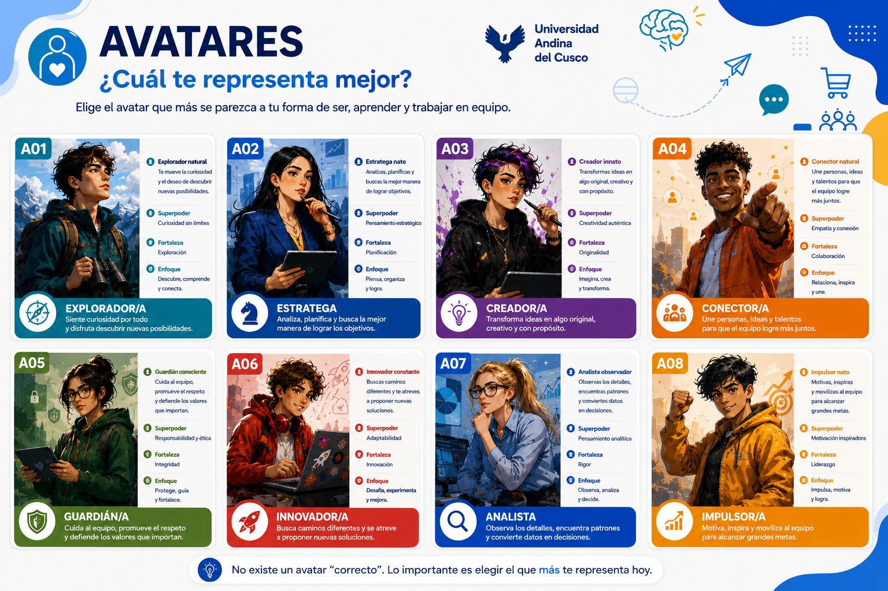

Construir una investigación que ayude a tomar decisiones
No investigaremos por cumplir una tarea. La meta es producir información que permita a una empresa comprender una situación real y decidir mejor.
Convertiremos una necesidad empresarial en una investigación clara, viable y útil. Aprenderás a buscar evidencia, formular preguntas, diseñar instrumentos y recoger datos para comprender al mercado y al consumidor.
No investigaremos por cumplir una tarea. La meta es producir información que permita a una empresa comprender una situación real y decidir mejor.
Antes de investigar consumidores, comenzaremos por conocer a las personas que compartirán esta experiencia. Cada estudiante completará un formulario breve, elegirá un avatar y podrá visualizar una tarjeta personal que servirá como base para su fotocheck.
Nombre, carrera y ciclo dicen muy poco sobre una persona. Esta actividad busca descubrir intereses, fortalezas, pequeñas historias y detalles que permitan recordar a cada integrante del grupo con respeto y autenticidad.
Estos personajes son originales y funcionan como arquetipos. El estudiante elegirá el código correspondiente en el formulario.

La descarga genera una imagen de referencia en el navegador. El fotocheck final se elaborará con las respuestas oficiales.
El nombre o apelativo con el que se siente más cómodo.
Permite conocer intereses genuinos.
Ayuda a identificar fortalezas grupales.
Opcional y solo si se siente cómodo compartiéndolo.
Recoge una historia breve y significativa.
Ayuda al docente a adaptar las experiencias.
Permite conocer expectativas reales.
Conecta su identidad con el contenido del curso.
Fortalece la presentación y el recuerdo visual.
Cada sesión tiene espacios para la PPT, el video, una lectura y el enlace de entrega.
Conocer la dinámica, formar equipos y proponer empresas o emprendimientos.
Comprender productos, criterios y conexiones entre las tres unidades.
Diferenciar fuentes, datos primarios y secundarios, e investigación exploratoria y concluyente.
Convertir una necesidad empresarial en una pregunta clara y objetivos coherentes.
Organizar el estudio y preparar el acercamiento formal con la empresa.
Reconocer sesgos y construir preguntas claras, medibles y adecuadas al público.
Los botones se activarán cuando incorporemos los modelos y plantillas definitivas.
Contexto, necesidad, contacto y antecedentes.
PróximamenteModelo institucional para contactar a la organización.
PróximamenteRegistro de información secundaria y relevancia.
PróximamenteVariables, dimensiones, preguntas y escalas.
PróximamenteEntrevistas o grupos focales.
PróximamenteCodificación y análisis en Excel o SPSS.
PróximamenteEl resultado es un borrador que deberá revisarse metodológicamente.
Fuentes, instrumentos, aplicación y organización de la información.
Perfil preliminar construido a partir de la evidencia disponible.